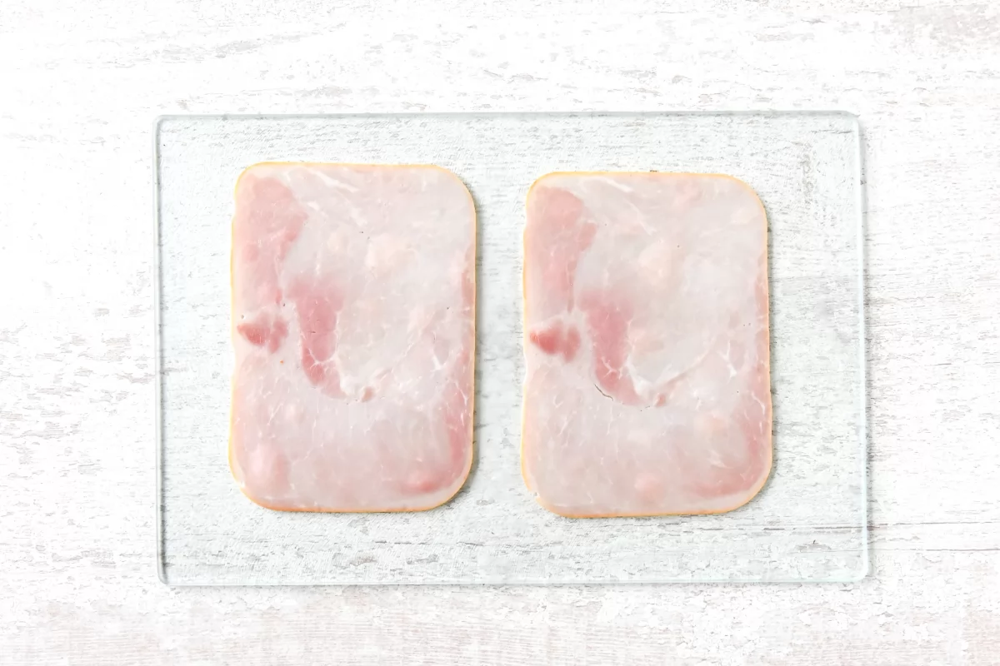
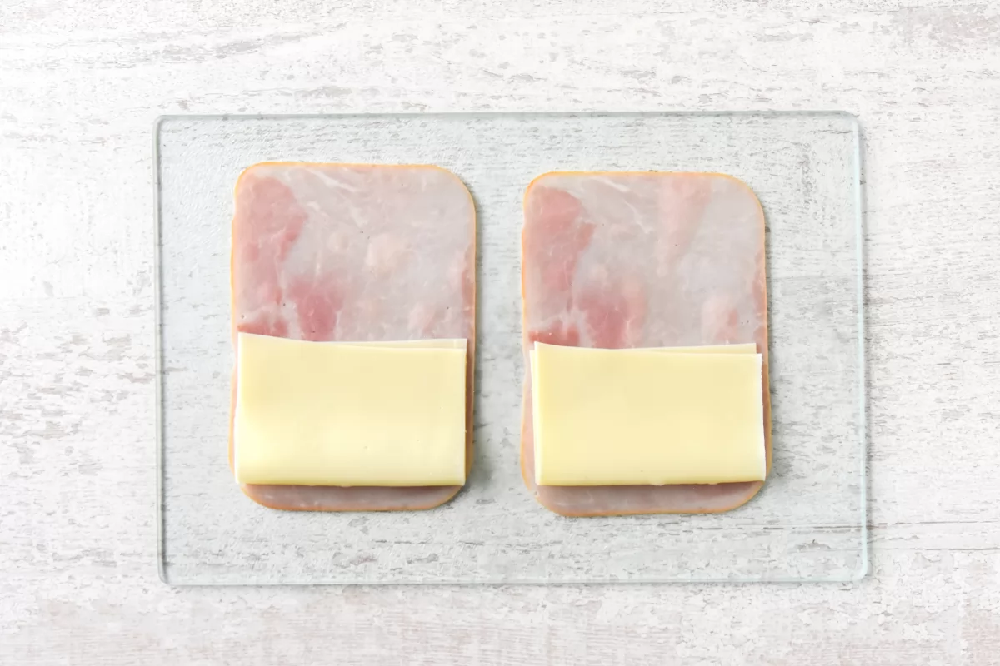
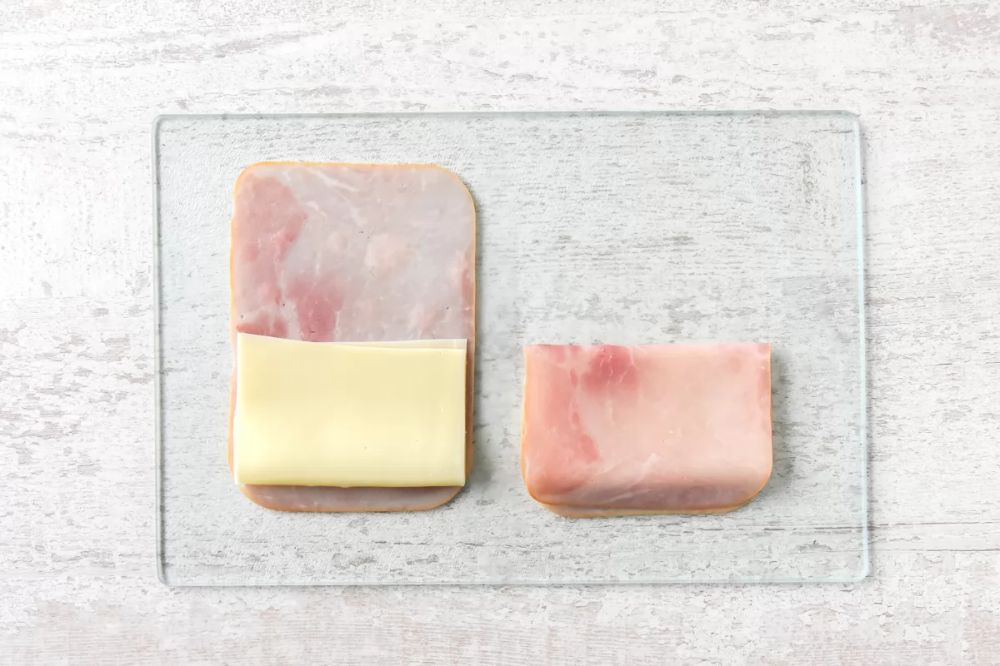
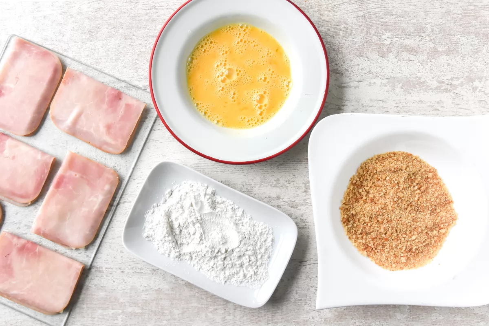
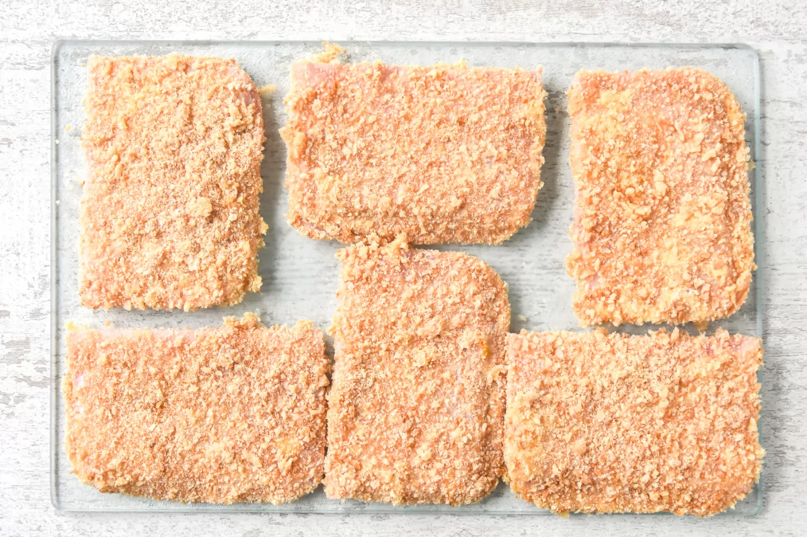
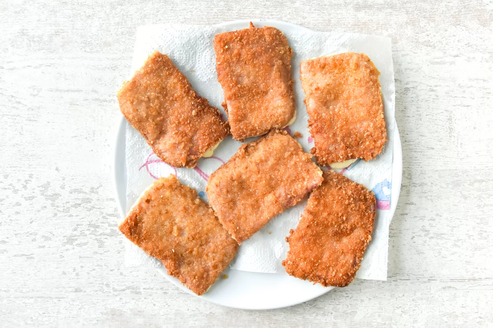

Información de la receta
Tiempo de preparación: 10 minutos
Tiempo de cocinado: 5 minutos
Tiempo total: 15 minutos
Raciones: 2, 6 unidades
Categoría: Plato principal
Ingredientes
- 6 lonchas gruesas de jamón cocido
- 6 lonchas de queso
- 40 g de harina de trigo
- 1 huevo M
- 100 g de pan rallado
- 100 ml de aceite de oliva para freír
Cómo hacer San Jacobo
- Coloca 6 lonchas de jamón cocido sobre un plato o bandeja. 
- En cada loncha de jamón, coloca una loncha de queso. 
- Dóblalas para formar un librito. 
- Pasa cada San Jacobo por harina, huevo batido y pan rallado. 
- Fríe los San Jacobos en aceite caliente hasta que estén dorados. 
- Escúrrelos en papel absorbente y sírvelos recién hechos. 